ロンダの墓/Londa
トラジャ族の墓を巡る旅。
お次はロンダという村の墓である。
宿からロンダへは乗り合いタクシーで向かった。
ぎゅうぎゅうだったが数十分の道のりをブラックサンダー1個分の料金で行けたので良しとしよう。
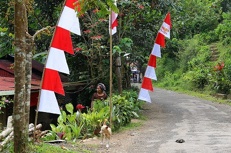
車道から墓地までは呑気な未舗装道を歩いていく。
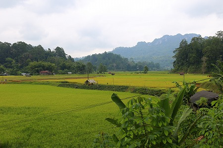
周囲には水田が広がっている。
手前のバナナやパパイヤの木がなければ日本の山間部のようでもある。
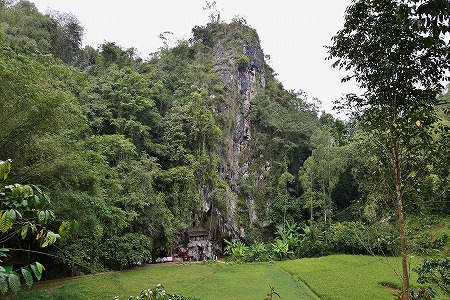
しばらく歩くと断崖の下の方に何やら見えてくる。
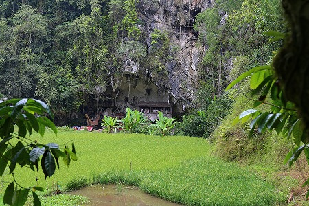
それがロンダの墓であった。
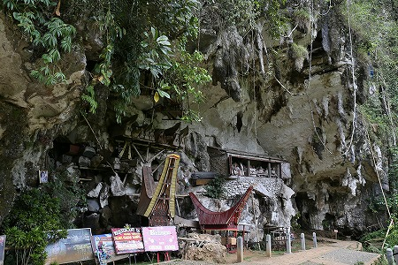
絶壁下の浅い洞窟に色々なモノがごちゃごちゃと詰め込まれている印象だ。
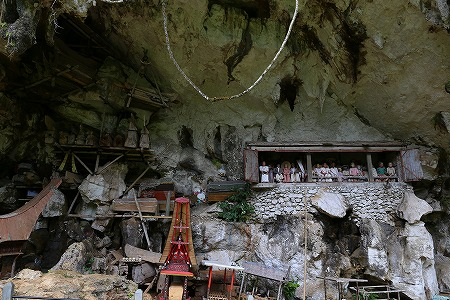
まあ、世界中の伝統的な墓というものは大抵こんな風に混沌としているものだ。
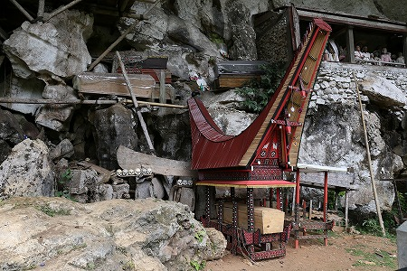
トラジャの伝統的家屋であるトンコナンを模したものは棺桶を収めるもので、日本で言えば龕（がん）のようなものといえよう。
このように龕に収まっている棺桶はまだ葬式が終わったばかりの新しいもので、龕が崩れると奥に移動するのだろう。
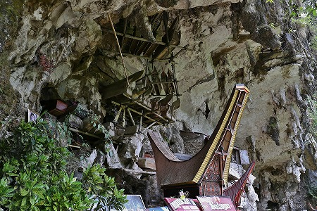
かなりアクロバティックな場所にも棺桶が置かれている。
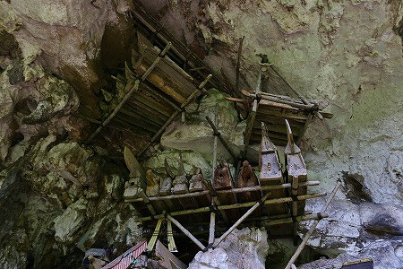
天に近いほど清浄だ、というトラジャ族の考え方を見事に体現した空中墓地である。
そこまでするか、というのが実際の感想なのだが。
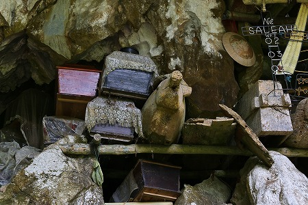
新旧入り混じって棺桶が積まれている。
中には水牛型の棺桶も。
棺桶の安置される場所は氏族によって決まっているのだそうな。
つまりこれらの棺桶は同族のものということ。
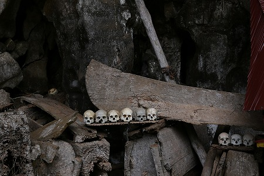
棺桶が腐食、崩壊して遺骨が下に落下するとこのように頭蓋骨だけが並べられる。
特別な場所に祀られる、というより地べたに落ちているのも忍びないから並べておこうか、的な印象。
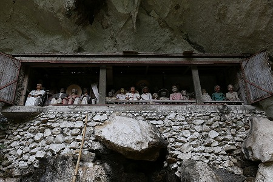
小屋のような建物の中にはタウタウ人形がずらりと並んでいる。
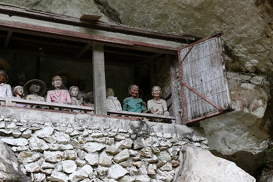
まるでこちらを睥睨しているかのよう。
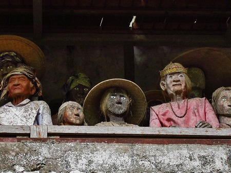
タウタウ人形のクオリティにはばらつきがある。
単純に古いものより新しいものの方がリアルで出来がいい。
しかしオールドスタイルの方が顔が平坦でデフォルメされているので遠くから見ても眼がギョロっとしていて目立つんだな、これが。
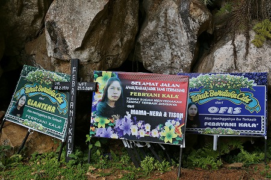
墓の手前には最近墓に納められた故人の看板が並んでいた。
私にも判る唯一のインドネシア語はスラマジャラン、つまりさようならという意味。
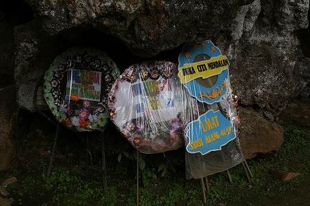
こちらは日本で言うところの花環。
浅い洞窟の脇にさらに奥へと続く狭い洞窟があった。
洞窟の入口に気弱そうな青年がランタンを持って「ガイドとライト…どすか？」と言っている。
うーん。ライトは持ってるし。ガイドは、まあ、いいや。
というわけで自前の装備で中に入ってみると…
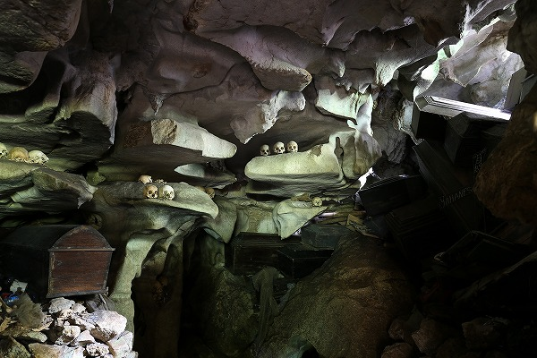
うおっ！
まだまだ墓が続いているじゃないか。
しかも先ほどの浅い洞窟に比べぐっと黄泉の国感強いんですけど。
あまりの幻想的な眺めにしばし呆然としていた。
まるでこの世じゃないみたい。いや、死の世界そのものだ。
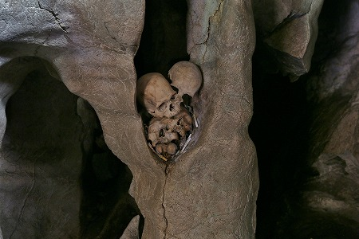
鍾乳洞のあちこちに頭蓋骨が安置されている。
気がつけば相当奥の方まで来てしまった。
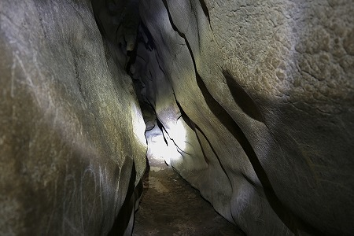
さすがに奥の奥の方には棺桶はない。
まあ、棺桶など通れないほど狭いからね。
戻ろうとして気がついたのだが、行きは一本道だったのに帰りは洞窟が枝分かれしてしているのだ。
あれ？道に迷ったような気が…
ヤバイ。完全に帰り道が判らなくなっちゃった…。
散々迷った挙句やっと外に出ることが出来た。
時間にしてみればわずか数分だが、メチャメチャ怖かったです。はい。
出口には先ほどの気弱そうな青年が「ほら迷ったでしょ」と言いたげにこちらを見ている。
最初っから言わんかい。
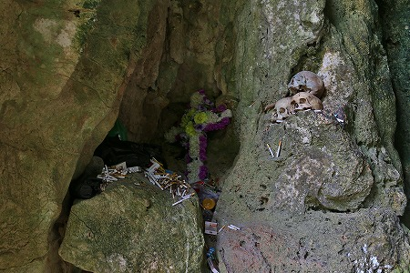
さらに別の洞窟もあった。
こちらには乱雑にタバコが積まれてあった。
そういえばインドネシアは喫煙者が多いお土地柄で、こうしてタバコが供えられているのをよく見た。
トラジャの墓の中でも規模、雰囲気共にかなりディープな墓であった。
墓の近くには土産屋があった。
トラジャでは墓は観光地なのだ。
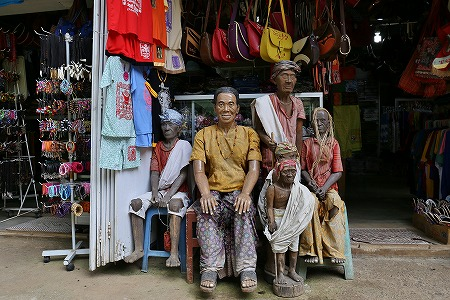
店先に並ぶタウタウ人形。
これを土産に買っていくガッツのある人がたまにはいるのだろうか。
次のお墓にＧＯ！
トラジャの葬式と墓に戻る
珍寺大道場 HOME